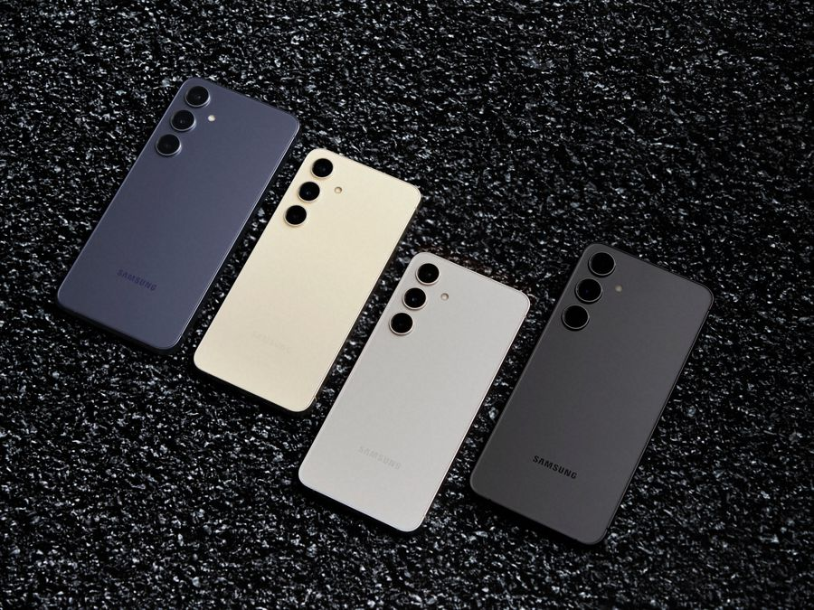

Galaxy S24 FE
Nesta resenha, exploramos o Galaxy S24 FE, um smartphone que combina recursos modernos e bom equilíbrio para produtividade, fotos e entretenimento.

Com câmera versátil, desempenho consistente e tela de alta qualidade, o S24 FE se destaca como uma opção segura para quem quer uma experiência premium sem chegar ao preço dos modelos mais caros da linha.
A bateria acompanha bem o uso diário, mas o valor final ainda pesa na decisão. Ele faz mais sentido quando aparece em promoção ou quando os recursos de câmera e tela são prioridade.
Pontos positivos: desempenho excelente, câmera de alta qualidade e bateria eficiente.
Pontos de atenção: preço pode ser um obstáculo para alguns compradores.